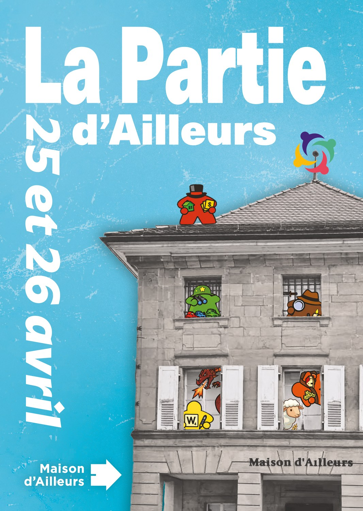
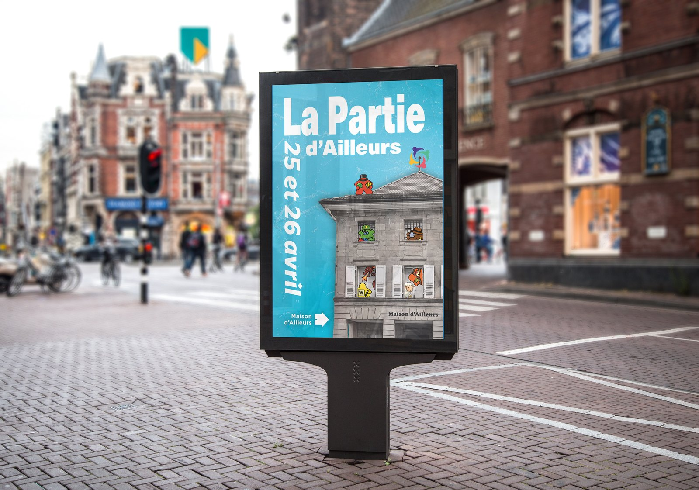
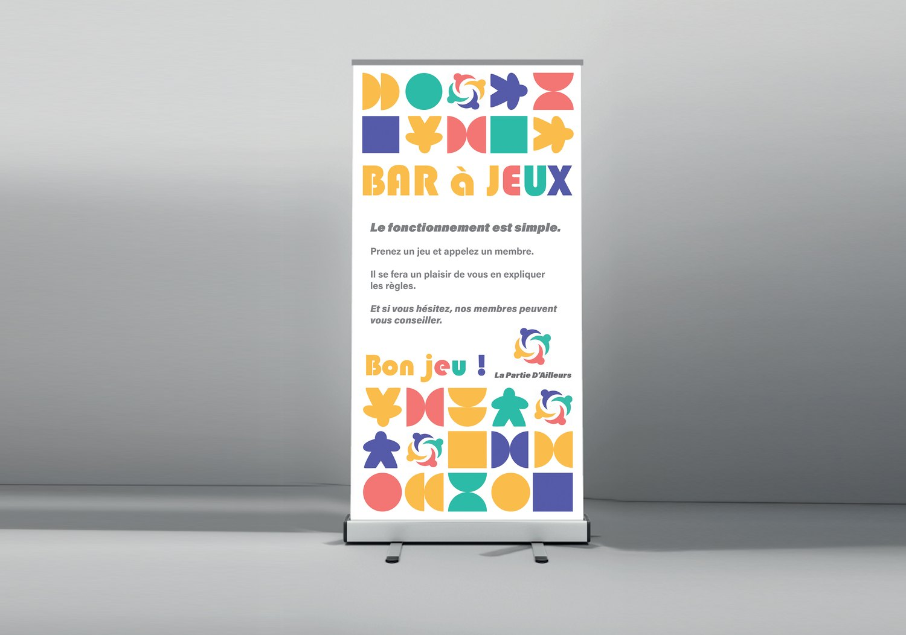
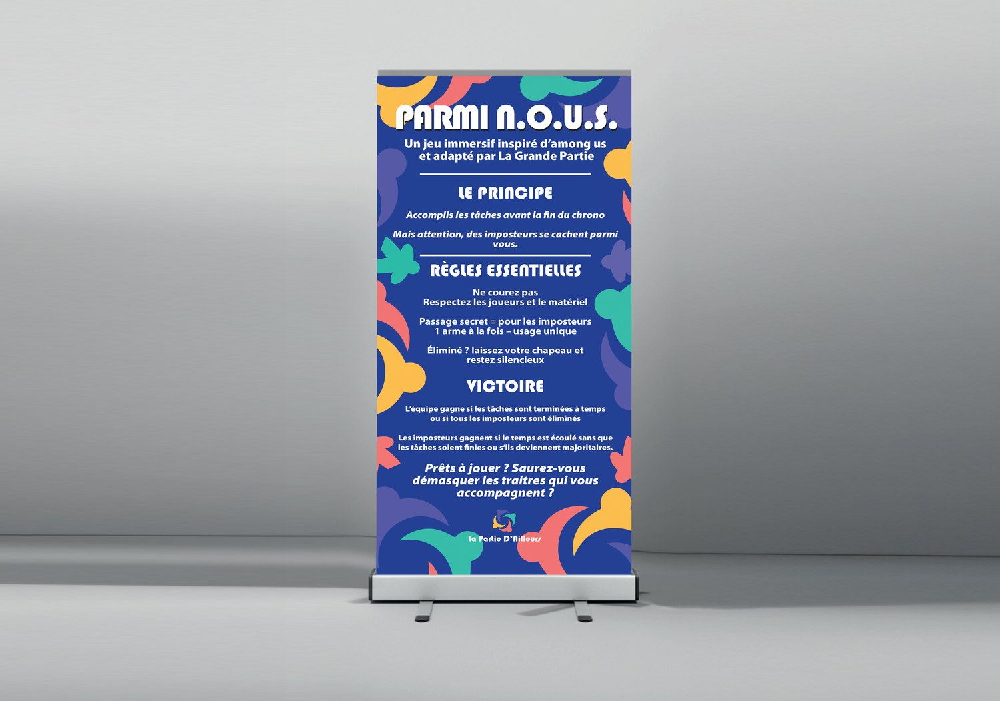
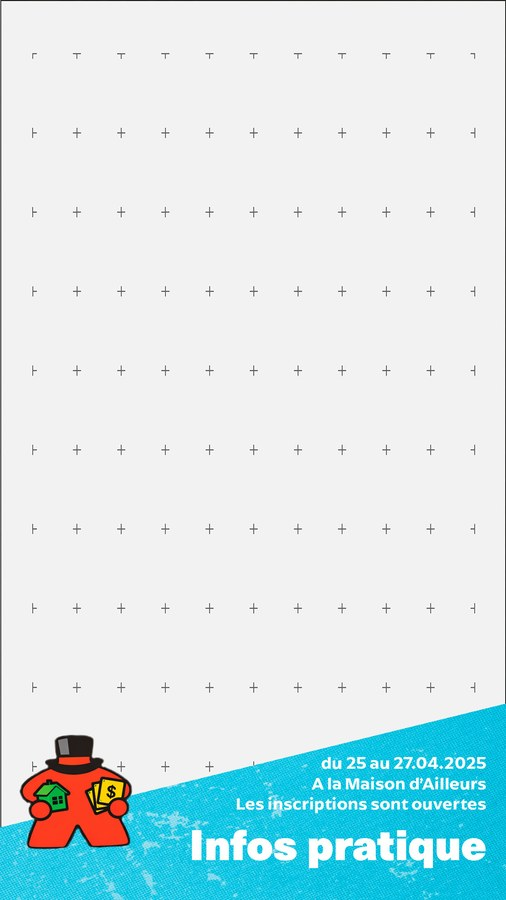
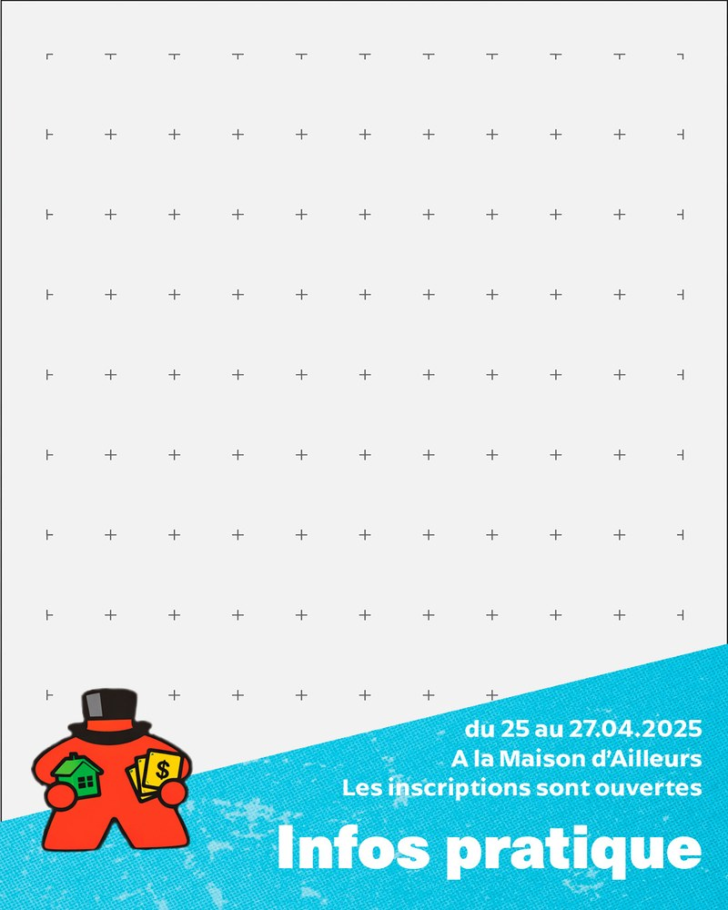
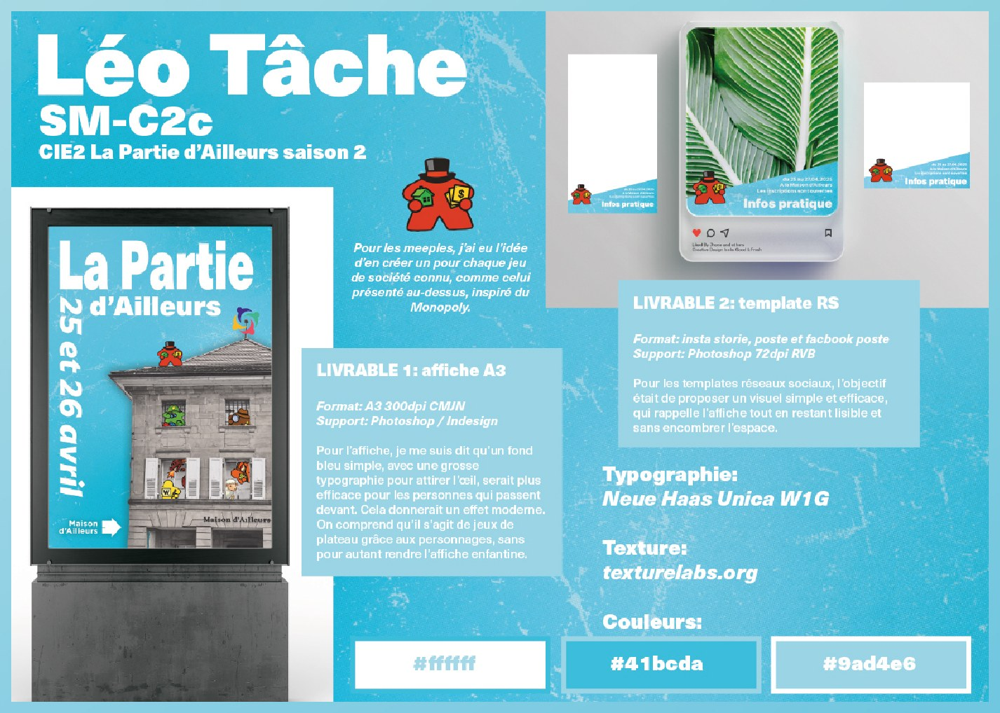
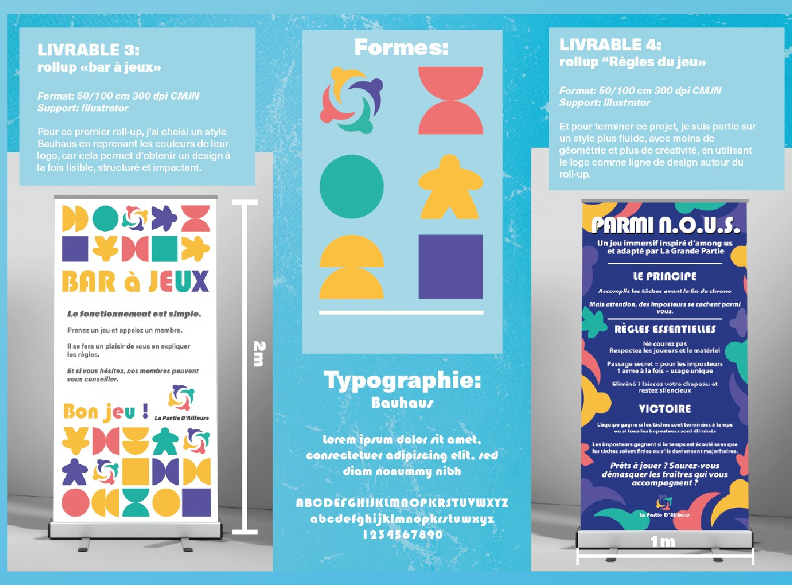

01 Campagne événementielle
La Partie d'Ailleurs
La Partie d'Ailleurs est un week-end jeux de société organisé à la Maison d'Ailleurs, le musée de la science-fiction d'Yverdon-les-Bains. Le musée a mandaté mon école pour la campagne, et le travail est revenu aux élèves de deuxième année pendant les CIE 2. Deux semaines, un brief au départ, un débrief à l'arrivée, quatre livrables à rendre.

02 Le point de départ
Attirer l'attention autrement.
Le musée mandate l'école, et ce sont les élèves qui traitent le dossier. L'entreprise change chaque année, cette fois c'était la Maison d'Ailleurs. Le premier jour, deux personnes sont venues briefer et débriefer avec nous, ensuite j'ai pu les relancer au fil du travail, et tout leur a été rendu au bout des deux semaines.
Trois contraintes sont tombées avec le brief. Le logo de l'événement existait déjà et ne bougeait pas. Le texte du roll-up des règles était fourni, interdiction d'en changer une ligne. Et surtout : ils voulaient que l'affiche ne ressemble pas aux roll-up, parce que les roll-up devaient pouvoir resservir à d'autres événements. Autrement dit, une commande qui interdisait la campagne cohérente qu'on apprend à faire. Il ne fallait pas une identité qui se décline, mais trois objets calés sur trois durées de vie différentes : une affiche jetable, deux panneaux faits pour durer.
03 L'affiche
Le musée envahi par les pions

Affiche A3, 300 dpi CMJN
J'ai détouré la vraie façade de la Maison d'Ailleurs, je l'ai passée en gris, et j'ai installé des pions aux fenêtres et sur le toit. Chaque pion renvoie à un jeu connu : le haut-de-forme et les billets du Monopoly sur le toit, le détective du Cluedo derrière les barreaux, le mouton des Colons de Catane et le jeton W du Scrabble.
Le résultat dit qu'il s'agit de jeux de société sans qu'un seul mot le dise, et il annonce le lieu de l'événement en montrant le lieu lui-même. Le gris de la façade laisse toute la couleur aux pions, et le bleu tient le reste.
04 Les roll-up
Deux panneaux faits pour resservir
Aucune date, aucun élément de l'affiche. Les deux roll-up sont construits pour être ressortis à n'importe quelle édition, et c'est précisément ce que le musée demandait. Le premier explique le fonctionnement du bar à jeux, le second porte les règles d'un jeu grandeur nature inspiré d'Among Us. Sur celui-là, tout le texte était fourni et intouchable : le travail était donc entièrement une affaire de mise en page, hiérarchiser trois niveaux d'information et faire tenir des règles complètes sur un mètre de large sans que le panneau devienne un mur de texte.

Roll-up « Bar à jeux », 50 × 100 cm

Roll-up « Règles du jeu », 50 × 100 cm
05 Les réseaux sociaux
Des gabarits à remplir

Story

Post
Deux formats livrés comme des gabarits plutôt que comme des visuels finis : la grande zone du haut reste libre pour la photo du moment, le bandeau du bas porte les informations pratiques, et le meeple du Monopoly fait le lien avec l'affiche. Le musée peut republier toute l'année sans redemander un fichier.
06 Le rendu
La planche remise au client


Planche de rendu remise à la Maison d'Ailleurs
07 Le résultat
Ce que j'en retiens
L'affiche tient : l'idée des pions qui habitent la façade fonctionne, et c'est la pièce dont je suis content. Les deux roll-up, moins. Ils ne parlent pas assez, on ne ressent pas le côté jeu. La contrainte de réutilisation les a poussés vers quelque chose de neutre, et je suis allé trop loin dans cette direction.
Travailler avec un texte imposé qu'on n'a pas le droit de toucher, et avec un logo qui n'est pas le sien. Toute la marge est alors dans la mise en page.
Chercher un registre qui reste réutilisable sans devenir tiède, pour que les roll-up aient autant de présence que l'affiche.